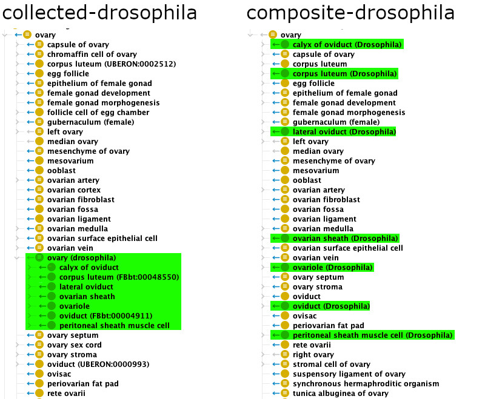

Combined Multispecies Ontologies¶
This document describes the multi-species products of Uberon and how they are built. It is an updated version of the documentation from the old Uberon Wiki, especially the following pages: Multi-species importer ontologies and Multi-species composite ontologies.
Types of multi-species ontologies.¶
Uberon provides two distinct types of multi-species products: collected ontologies and composite ontologies.
Collected ontologies¶
A collected ontology is obtained by merging Uberon itself, the Cell Ontology (CL), one or several taxon-specific anatomy ontologies, along with, for each concerned taxon, the corresponding ontology of developmental stages (if such an ontology exists) and the corresponding bridge files.
For example, the collected-drosophila.owl ontology is the result of
merging:
- Uberon,
- CL,
- the Drosophila Anatomy Ontology (FBbt),
- the bridge between Uberon and FBbt,
- the bridge between CL and FBbt,
- the Drosophila Developmental Ontology (FBdv),
- and the bridge between Uberon and FBdv.
Note: Collected ontologies used to be called “importer ontologies”, because they were made by using OWL
Importstatements to gather the different component ontologies. This no longer reflects how those ontologies are built (see further below for some details about the pipeline that builds them), so “collected ontologies” is now preferred.
Available collected ontologies¶
Uberon defines several collected ontologies for different taxonomic levels. The custom Uberon Makefile, in its “Composite pipeline” section, is the definitive source of truth for the various collected ontologies that are available, but as of January 2025 the list is as follows (for simplicity, bridge files are not mentioned):
| Product | Components |
|---|---|
| collected-drosophila | FBbt + FBdv |
| collected-worm | WBbt + WBls |
| collected-zebrafish | ZFA |
| collected-xenopus | XAO |
| collected-human | EHDAA2 + AEO |
| collected-mouse | EMAPA + MmusDv |
| collected-adult-mammal | MA |
| collected-embryonic-mammal | collected-human + collected-mouse |
| collected-mammal | collected-adult-mammal + collected-embryonic-mammal + DHBA + DMBA + HBA + MBA + PBA |
| collected-anamniote | collected-zebrafish + collected-xenopus |
| collected-amniote | collected-mammal |
| collected-tetrapod | collected-amniote + collected-xenopus |
| collected-vertebrate | collected-tetrapod + collected-zebrafish |
| collected-metazoan | collected-vertebrate + collected-drosophila + collected-worm + CEPH + CTENO + PORO |
| collected-lifestages | Uberon’s life-stages subset + all available species-specific life stages ontologies |
Note that only collected-metazoan, collected-vertebrate, and
collected-lifestages are regularly built and provided as release
artifacts, available through permanent URLs in OBO, OWL, and
Obograph-JSON formats. Other products, if they are needed, must be built
on demand (see further below for instructions on how to do that).
Advantages¶
Collected ontologies
- retain all logical and non-logical axioms of the source ontologies; reasoning “just works”;
- allow incorporation at desired level of granularity.
Disadvantages¶
- Collected ontologies are highly latticed and difficult to navigate.
- Differences between a species classand the Uberon parent is often trivial or non-existent, resulting in duplicated portions of the hierarchy.
- Many tools are not configured to show the “OBO Foundry unique label”
provided by the bridge files, which means that for example
collected-metazoan.owlwill display 10 or so classes with ardfs:labelof “brain”.
Composite ontologies¶
Composite ontologies were designed to address the redundancy problems inherent with collected ontologies.
Principle¶
A composite ontology is derived from the corresponding collected
ontology (for example, composite-drosophila is derived from
collected-drosophila). The key part of the process by which a
composite ontology is derived is to replace, whenever possible, the
taxon-specific terms coming from the taxon-specific ontologies by
anonymous class expressions that use the corresponding taxon-neutral
term from Uberon.
For example, let us consider the FBbt term “ovary” (FBbt:00004865): it
is mapped to the Uberon term “ovary” (UBERON:0000992), which means
that collected-drosophila contains the following axiom (provided by the
bridge between Uberon and FBbt):
(NCBITaxon:7227 being the identifier for the Drosophila melanogaster
taxon).
To produce composite-drosophila, we remove the FBbt:00004865 class,
and rewrites all axioms that refer to it to make them use the anonymous
expression the class is equivalent to instead. So the following axiom,
which states that the “oviduct” (FBbt:00004911) is continuous with the
fly ovary:
gets rewritten as
The figure below illustrates the resulting differences between a
collected ontology and a composite ontology. On the left, the
collected-drosophila ontology contains, below the taxon-neutral “ovary”
(UBERON:0000992) term, the fly-specific “ovary” term
(FBbt:00004865), to which all terms related to the Drosophila ovary
are attached. On the right, the composite-drosophila no longer contains
the redundant fly-specific “ovary”, and all the fly terms are directly
rattached to the taxon-neutral “ovary”.

Available composite ontologies¶
Because composite ontologies are derived from the collected ontologies, each collected ontology has a corresponding composite ontology. Therefore, you may refer to the list of collected ontologies above.
As for the collected ontologies, only composite-metazoan,
composite-vertebrate, and composite-lifestages are built regularly
and provided as pre-built artifacts. Other products, if they are needed,
must be built on demand.
Advantages and disadvantages¶
Compared to collected ontologies, composite ontologies have less redundancy and are easier to navigate.
However, the absence of some taxon-specific terms (when a taxon-neutral equivalent is available) may make them unsuitable for data annotation, unless the taxon information is recorded separately. For example, if you need to annotate a fly ovary sample, a composite ontology will not contain a term that specifically represents a fly ovary – it will only contain a term that represents a taxon-neutral ovary, and you will need another way to record the fact that the sample is coming from a fruit fly.
Building the multi-species ontologies¶
Collected ontologies are simply a merge (performed using ROBOT’s merge
command) of the source ontologies.
The only particularity is that the taxon-specific ontologies are not
fetched directly from their canonical online locations. Instead, they
are mirrored locally, the mirrors are committed to the repository, and
all subsequent operations are done using the local mirrors. To refresh
the local mirrors, run the following command from the src/ontology
directory:
(Alternatively you may also run sh run.sh make
refresh-external-resources instead, which will also the mappings and
the bridge files, as well as the normal ODK import modules.)
To build a given collected ontology, simply run:
A composite ontology is built by first building the corresponding collected ontology, then
- removing all disjointness axioms;
- removing redundant taxon-specific terms as explained above (this is done using a custom ROBOT plugin);
- reasoning, relaxing, and reducing.
To build a given composite ontology, simply run:
Adding a species to a collected/composite ontology¶
(This is not an exhaustive documentation, but intended as a rough guide for future reference.)
- Add a “local mirror” for the species-specific ontology to be included. Follow the examples of the Makefile rules for the existing local mirrors.
- Ensure that mappings between Uberon/CL terms and the species-specific terms are available -- either maintained in Uberon directly, or fetched from a remote source (likely the species-specific ontology).
- Add a bridge file (or several bridges, if needed) for the species-specific ontology.
- Add the local mirror and any corresponding bridge file to the list of
source files in the
COLLECTED_xxx_SOURCESvariable (wherexxxis the name of the collected/composite ontology, e.g.metazoan).